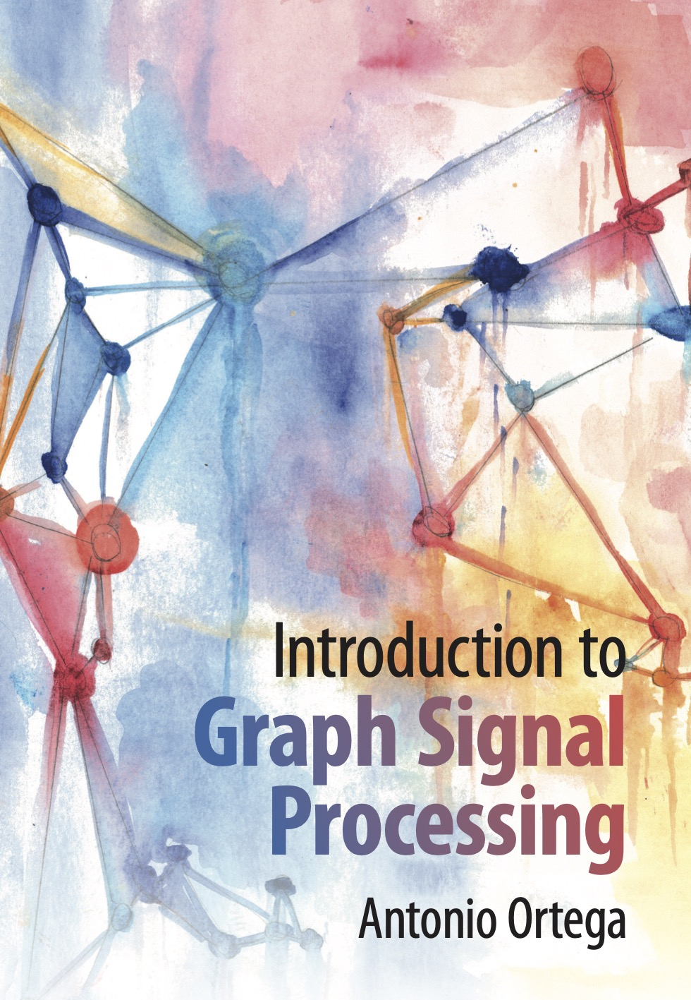

Antonio Ortega
Dean's Professor of Electrical and Computer Engineering
Dean's Professor of Electrical and Computer Engineering
Antonio Ortega Antonio Ortega received his undergraduate and doctoral degrees from the Universidad Politecnica de Madrid, Madrid, Spain, and Columbia University, New York, NY, respectively. At Columbia, he was supported by a Fulbright Scholarship. In 1994, he joined the Electrical Engineering department at the University of Southern California (USC), where he is currently a Dean's Professor and has served as Associate Chair. He is a Fellow of the IEEE and EURASIP and a member of APSIPA. He was the Editor-in-Chief of the IEEE Transactions of Signal and Information Processing over Networks and currently serves as VP of Publications for the IEEE Signal Processing Society. He has received several paper awards, including the 2016 Signal Processing Magazine award. His recent research focuses on graph signal processing, machine learning, and multimedia compression. Over 50 PhD students have completed their PhD theses under his supervision, and his work has led to over 400 publications in international conferences and journals, as well as several patents. He is the author of the book, "Introduction to Graph Signal Processing," published by Cambridge University Press in 2022.
Visiting positions at 15+ institutions across Japan, Spain, France, Singapore, Switzerland, and Australia. Current collaborations include Télécom Paris, IMDEA Networks (Spain), Universidad Politécnica de Madrid (Spain), University of Osaka, Instute of Science, Tokyo, York University (Canada) and Universidad Industrial de Santander (Colombia). 50+ PhD graduates working at universities and companies worldwide.
Research interests span signal processing and machine learning, with a focus on graph signal processing and applications in various domains and compression of images, video and 3D visual data.
Early contributions to GSP — sampling theory, filter banks, graph wavelets, graph Fourier transforms (GFTs), and graph learning. Spectral analysis for directed graphs and fast GFTs.
Rate-distortion optimization, graph-based transforms for video coding, content-adaptive transforms, image coding for machines, and UGC compression with denoised references.
Graph-based semi-supervised learning, active learning, deep neural network analysis using graph tools, non-negative kernel regression, and out-of-distribution detection.
Point cloud attribute compression, denoising, quality assessment, 3D Gaussian splatting data coding, volumetric video conferencing, and dynamic polygon clouds for VR/AR.
Distributed data compression, graph-based wavelets for sensor webs, soil moisture downscaling, satellite image fusion, and efficient data gathering.
Waterflood tomography, reservoir characterization, upscaling of geological models using graph wavelets, anomaly detection for sensor drift, and fault detection using GSP.

Author: Antonio Ortega
Publisher: Cambridge University Press, 2022
Covers graph theory foundations, graph Fourier transform, sampling on graphs, graph filter banks, graph wavelets, graph learning, and applications in compression, ML, and networks.
Full list on Google Scholar and DBLP.
Signal, Transform, and Compression Lab at USC. Website: sipi.usc.edu/~ortega/ · GitHub: github.com/STAC-USC
Research supported by government agencies and industry partners, including: